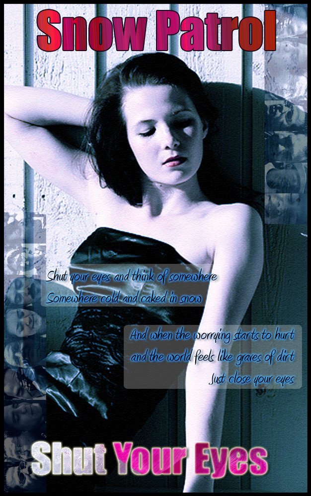

The original background picture. (Source: www.Flickr.com)

The picture of the people with eyes closed.(Source:www.Flickr.com)

The image used to fill the text.(Source: www.Flickr.com)
The final image.
The final image after cutting into a shape.
| Transparent Effects - Week_05 |
The original background picture. (Source: www.Flickr.com) |
The picture of the people with eyes closed.(Source:www.Flickr.com) |
The image used to fill the text.(Source: www.Flickr.com) |
|  The final image. |
The final image after cutting into a shape. |
| kishanW (2008). |